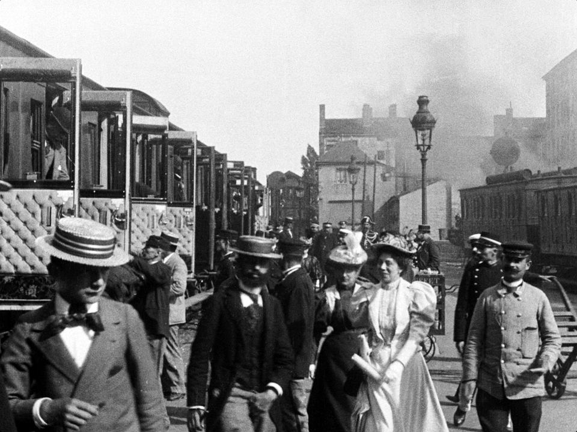

O Filmach
Historia filmu
Wiele lat trwały poszukiwania naukowców i wynalazców, którzy choć na chwilę pragnęli odtworzyć ruch. Wreszcie postępy w dziedzinie fotografii umożliwiły skonstruowanie pierwszej na świecie kamery filmowej i stworzenie pierwszej taśmy filmowej.
W grudniu 1895 r. w Paryżu miała miejsce światowa premiera pierwszego filmu. Wtedy to francuscy wynalazcy kamery filmowej i aparatury projekcyjnej, bracia Ludwik i August Lumiere, wyświetlili publicznie na ekranie króciutki filmik zatytułowany Przyjazd pociągu na dworzec. To oni swemu wynalazkowi nadali nazwę, którą posługujemy się do dziś dnia : „kinematograf” ( z grec. „zapisywanie ruchu” ). Tak właśnie skończyła się prehistoria filmu, zaczęła zaś właściwa historia sztuki filmowej, bardzo ściśle związana z nowymi ulepszeniami technicznymi i wynalazkami.
Początkowo obraz na ekranie był czarno-biały i niemy, a przebieg akcji wyjaśniały napisy na ekranie. W czasie seansu filmowego przygrywała orkiestra lub pianista. Trwało tak przeszło 30 lat i dopiero wynalezienie filmu dźwiękowego zburzyło wiele ustalonych już praw i zasad sztuki filmowej. Niedługo potem przyszedł wynalazek taśmy kolorowej i filmu barwnego. Po II wojnie światowej film barwny zaczął opanowywać ekrany; pojawił się również masowo największy konkurent kinematografii, jakim jest małe kino – telewizor. Eksperymentowano już także nad filmami plastycznymi. Powstało wówczas wiele różnych systemów tzw. „szerokich ekranów”, dających nieraz złudzenie plastyczności obrazu. Wynaleziono również i zastosowano w salach kinowych tzw. „stereofonię”, co umożliwiło plastyczne i przestrzenne odtwarzanie dźwięku, dzięki odpowiednio rozmieszczonym głośnikom. Nie zaniechano eksperymentów nad filmem plastycznym.
Źródło: Wikipedia - Historia filmu
Typy filmów
Film to bardzo obszerna dziedzina i można ją podzielić na wiele sposobów.
1. Podstawowy i najbardziej popularny z nich to podział na rodzaje:
- film eksperymentalny - utwór przynależący do tego rodzaju nie musi np. być oparty o scenariusz, opowiadać historii, stosować powszechnie przyjętych zasad języka filmu.Film eksperymentalny przyjmuje dwie podstawowe formy: abstrakcyjną lub asocjacyjną. W tej pierwszej opiera się w całości na właściwościach, jakie niesie ze sobą obraz (kolor, kształt). W drugiej zaś główną formą oddziaływania jest zestawianie rozmaitych elementów, niekiedy z pozoru do siebie nieprzystających, w celu wyrażenia autorskiej idei.
- film fabularny – aktorski film fikcji,
- film animowany – tworzony za pomocą klasycznych technik poklatkowych – rysunkowych lub przestrzennych (np. lalkowych i plastelinowych) lub najnowszych technik komputerowych – animacji 3D,
- film dokumentalny – film o treści niefikcyjnej, dokumentujący rzeczywistość,
- film oświatowy – dla celów dydaktyczno-instruktażowych,
- film propagandowy – dla celów jakich w danym momencie wymaga propaganda,
Pojęcie filmu w społecznej świadomości najczęściej kojarzy się jednak z rozrywkowymi aktorskimi filmami fikcji nazywanymi też fabularnymi.
2. W zależności od długości filmy dzielą się na
- krótkometrażowe – do 22 minut,
- średniometrażowe – od 22 do 55 minut,
- pełnometrażowe – ponad 55 minut – przeciętnie 90-132 minut.
Poniżej kadr z jednego z pierwszych filmów
Źródło: Wikipedia
Klasyczny film hollywoodzki
Hollywood to dzielnica amerykańskiego miasta, które nazywa się Los Angeles. To tam, na zachodnim wybrzeżu Stanów Zjednoczonych, już na początku XX wieku, zaczął intensywnie rozwijać się amerykański przemysł filmowy. Do Hollywood przyjeżdżali producenci, aktorzy, reżyserzy i scenarzyści nie tylko z innych rejonów USA, ale także z innych krajów. Hollywood stało się ich siedzibą i miejscem pracy. Powstawały kolejne studia filmowe oraz wytwórnie. W latach 20. XX wieku robiono tam około 800 filmów rocznie! Wkrótce Hollywood stało się „fabryką snów” – symbolem sukcesu i kariery dla wielu z tych, którzy pracowali w branży filmowej, a także symbolem marzeń widzów tych filmów. Tak zresztą jest i dzisiaj, choć przecież filmy, które powstają w USA, nie są i nie były kręcone wyłącznie w Hollywood. Co oczywiste, filmy produkuje się także w innych krajach. Są takie, w których powstaje ich nawet więcej niż w Hollywood! Dla porównania, obecnie w całym USA, a nie tylko w samym Hollywood, powstaje rocznie nieco ponad 500 filmów fabularnych, a w tzw. Bollywood, czyli w Indiach, ponad 1300! W Polsce rocznie kręci się około 30–40 filmów fabularnych.
Klasyczny film hollywoodzki to zatem pewien typowy, charakterystyczny (w formie i treści) film, którego formuła ukształtowała się w Hollywood, w okresie pomiędzy rokiem 1930 a 1960. Wielkie wytwórnie filmowe produkowały wówczas filmy w sposób bardzo uporządkowany, według schematu – trochę jak w fabryce. Sprawiało to, że filmy stawały się nieco do siebie podobne. Nie tylko w treści (chętnie realizowano filmy o podobnej tematyce, korzystano ze wzorów opowieści wyznaczanych przez gatunki filmowe), ale i w formie (sposób filmowania czy montażu był całkowicie podporządkowany sprawnemu opowiadaniu historii). Oczywiście to, że filmy były do siebie podobne, nie oznacza, że były identyczne (to byłoby bez sensu i do tego strasznie nudne – jak oglądanie cały czas jednego i tego samego filmu). Drobne odstępstwa od reguł, małe urozmaicenia treści czy stylu miały miejsce i były mile widziane. Zresztą wielu twórców kina robiących filmy w tym właśnie okresie (choć korzystało z reguł wyznaczanych przez klasyczny film hollywoodzki), zbudowało swój własny, charakterystyczny styl i zyskało miano Autorów filmowych. Filmy Alfreda Hitchcocka czy Johna Forda rozpoznawał od razu każdy widz. Poza tym w latach 1930–1960 powstało wiele dzieł filmowych, które do dziś uznawane są za znaczące osiągnięcia sztuki filmowej. Należą do nich między innymi: western „Dyliżans” z 1939 roku, melodramat „Casablanca” z 1942 roku, musicale „Amerykanin w Paryżu” z 1951 roku i „Deszczowa piosenka” z 1952 roku czy też komedia „Pół żartem, pół serio” z 1959 roku.
Źródło: Elementarz młodego kinomana
5 ciekawostek o Hollywood
- Znalezienie się w Hollywood Walk of Fame, czyli alei gwiazd Hollywood, to spore wyróżnienie. Czy aby na pewno? Pewnym rozczarowaniem dla wielbicieli wyróżnionych sław może być fakt, że gwiazdę w Walk of Fame trzeba sobie kupić. Owszem, jury wyłania co roku 20 kandydatów, ale bez frycowego nie ma co liczyć na wmurowanie gwiazdy. Opłatę w wysokości 30 tys. dolarów wpłaca się do Izby Handlu Hollywood - może to zrobić sam zainteresowany albo ktoś w jego imieniu.
- Słynny napis na wzgórzu powstał w 1923 roku i głosił "Hollywoodland", a litery miały po 15 metrów wysokości. W 1949 roku usunięto cztery ostatnie znaki, napis przebudowano i wykorzystano nieco mniejsze formy - 13,7-metrowe. Cały napis miał w założeniach zostać zdjęty po roku - podobnie zresztą jak miała zostać rozmontowana wieża Eiffla. Oba obiekty spotkał ten sam los i cieszą oczy po dziś dzień.
- Spośród niemal 2,5 tysiąca gwiazd w Hollywood Walk of Fame tylko jedna wyraźnie różni się od reszty. Tylko jedna znajduje się w pionie, na ścianie Kodak Theatre, a nie na chodniku. Jej właścicielem jest zmarły już Muhammad Ali, który nie chciał, by po nim chodzono. Wzięto pod uwagę to, jak wielkiego formatu człowiekiem był Ali i uhonorowano jego wolę - wyróżnieniem, którego nie można było sobie kupić.
- Stolica światowej kinematografii... tia... Zaskakujący może okazać się fakt, że w Hollywood District jest... aż jedna wytwórnia filmowa. To zajmujące 26 hektarów studio Paramount. Wszystkie inne wytwórnie zdążyły się już wynieść do innych części Los Angeles.
- Dlaczego to Hollywood stało się stolicą filmowego świata? Jednym z powodów jest "słynący z krystalicznej uczciwości" Thomas Edison i jego firma z siedzibą w New Jersey, która posiadała większość patentów niezbędnych do produkcji filmów. Mający po dziurki w nosie pozwów od de facto jednego z większych złodziei wszech czasów, filmowcy zaczęli uciekać coraz dalej na zachód, gdzie ściganie ich było trudniejsze. Gdy dalej był już tylko ocean, osiedli właśnie w Los Angeles.
Źródło: Joe Monster